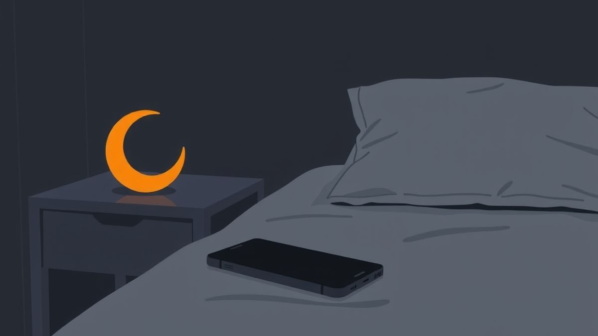
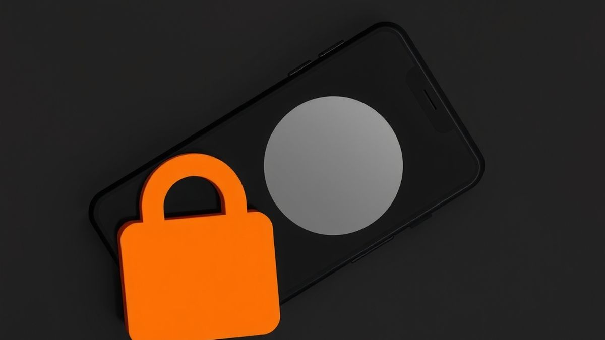
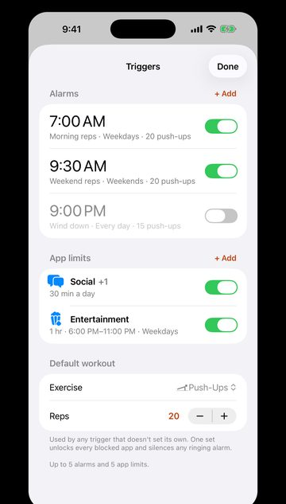

How to Use iPhone Downtime and Sleep Focus Together
iPhone Downtime and Sleep Focus do different jobs. Here's what each one does in iOS 27 (and iOS 26), how to line them up, and the settings that make them hold.


TL;DR
- Sleep Focus decides what can reach you. iPhone Downtime (the Screen Time Schedule in iOS 27) decides what you can open. Use both.
- Sleep Focus starts at the beginning of Wind Down (Health → Sleep → Full Schedule & Options). Start your Screen Time Schedule at that same minute.
- End the schedule about 30 minutes after your alarm so the morning doesn't start in the feed.
- Give Sleep Focus a single, boring Home Screen page and allow only the people who truly need you.
- Add a Screen Time passcode, set Always Allowed, turn on Share Across Devices, and test it once. On iOS 26, turn on Block at Downtime.
10:58 p.m. The moon icon is on. Your Lock Screen has gone dark and quiet, the way you set it up.
You swipe up anyway. The feed opens like nothing happened. Forty minutes later the moon icon is still there, looking at you.
That's not Sleep Focus failing. It's doing exactly its job, which is a different job from the one you wanted.
Sleep Focus decides what can reach you at night. iPhone Downtime (called a Screen Time Schedule since iOS 27) decides what you can open. Most people turn on one and expect it to do both. Used together, set to start at the same minute, they cover each other's gaps. Here's the full setup, with current iOS 27 steps and the iOS 26 version.
iPhone Downtime vs. Sleep Focus: what each one does
Short answer: use both. Sleep Focus quiets the phone. Downtime locks the apps you'd otherwise open anyway.
| Sleep Focus | Downtime / Screen Time Schedule | |
|---|---|---|
| Where it lives | Settings → Focus → Sleep, timed by your sleep schedule in the Health app | Settings → Screen Time → Screen Time Schedule (iOS 27) or Downtime (iOS 26) |
| What it controls | Notifications and calls, plus which Lock Screen and Home Screen you see | Which apps you can use during a time window |
| Can you still open Instagram? | Yes | Not unless it's in an allowed category or Always Allowed |
| When it starts | At the start of your Wind Down period | At whatever time you set; it doesn't follow the Health app |
| Who can still reach you | People and apps you allow in the Focus | Always Allowed contacts and your Communication Limits |
Apple says Sleep Focus "can filter out notifications and phone calls." Nothing in it stops an app from opening. That's Screen Time's job: during a schedule, only the categories you pick for that window and your Always Allowed apps are available.
The two don't switch each other on. Sleep Focus follows the sleep schedule you set in Health. The Screen Time Schedule has its own start and stop times. So step one is picking one time and giving it to both.

Step 1: Set your bedtime and Wind Down in Health
Everything else keys off this. Open the Health app, tap Browse, tap Sleep, then tap Sleep again. If you've never set one up, tap Get Started. Otherwise scroll to Your Schedule and tap Full Schedule & Options.
- Set the days, then drag the slider to your bedtime and wake-up time. You can add a second schedule for weekends.
- Under Additional Details, tap Wind Down and choose how long before bedtime it starts. Apple allows 15 minutes to 3 hours.
- Make sure Use Schedule for Sleep Focus is on, or the Focus won't start by itself.
Here's the detail most guides skip: your Sleep Focus begins at the start of Wind Down, not at bedtime. With an 11:00 p.m. bedtime and 45 minutes of Wind Down, Sleep Focus turns on at 10:15. That's the time you'll give the Screen Time Schedule too.
Pick a wake-up time you can keep most days, weekends included. In a UK Biobank study of 60,977 adults who wore a wrist tracker for a week, more regular sleep timing was linked to a 20% to 48% lower risk of dying during follow-up than the least regular sleep. It's observational, in a group averaging about 63, so it can't show regularity is the cause. But consistency is free.
Step 2: Make Sleep Focus quiet and boring
Go to Settings → Focus → Sleep. Three settings do most of the work:
- People: allow only the few people who might genuinely need you at night. Everyone else waits until morning.
- Apps: allow nothing social. Every notification you let through is an invitation to open the app.
- Home Screen: choose a single Home Screen page for the Focus with only the dull, useful stuff: Clock, a podcast or audiobook app, Books. If the feed's icon isn't on the screen, you have to go looking for it, and that pause is the point.
One privacy note. If you share Focus across your devices and turn on Share Focus Status, people who message you can see that you've silenced notifications. You can change that per person from their contact card.
That fixes the 1 a.m. ping. If you go looking for the feed yourself, keep going.
Step 3: Set iPhone Downtime to start with Wind Down
In iOS 27, Apple folded Downtime into the Screen Time Schedule. If you're searching Settings for "Downtime" and can't find it, that's why. Apple notes the new schedules need iOS 27 or later on all your Apple devices.
If Screen Time isn't on yet, go to Settings → Screen Time → Screen Time Schedule and tap Turn On App & Website Activity. Then:
- In Screen Time Schedule, turn on Schedule and tap Add Schedule.
- Pick the days. Use the same days as your Health sleep schedule.
- Tap the time window and name it something plain, like "Night."
- Set the start to your Wind Down time (10:15 p.m. in our example) and the stop to 30 minutes after your alarm.
- Under Time Allowance categories, leave Social Media, Entertainment and Games off for this window. Categories you select are the ones you can use.
- Tap Always Allowed to check what stays open no matter what.
Ending it after you're up means the first thing your hand does at 7:00 isn't the feed. If mornings are the harder half, Your Alarm Isn't Too Quiet covers getting out of bed.
On iOS 26 or earlier
Go to Settings → Screen Time → Downtime, tap Scheduled, choose Every Day or Customize Days, and set the start and end times. You'll get a reminder 5 minutes before Downtime begins. By default, Apple says, you can choose to keep using apps when Downtime hits. To make it a real block, set a Screen Time passcode (below), then turn on Block at Downtime. Blocked apps show up dimmed with an hourglass and won't open.
Step 4: Make it hold at 11 p.m.
A schedule you can switch off in two taps is a suggestion. These make it stick.
Set a Screen Time passcode
Go to Settings → Screen Time → Passcode & Management → Lock Screen Time Settings and enter a four-digit code. Now changing your schedule asks for it. Set up Screen Time Passcode Recovery with your Apple Account when it offers, so you can't lock yourself out for good.
Don't reuse your phone passcode. The strongest version: let a partner or roommate type a code you don't see. We went deeper on passcodes in How to Set App Limits on iPhone That Actually Stick.
Get Always Allowed right
Go to Settings → Screen Time → Always Allowed and use Add People and Add Apps. Keep Phone, Messages, Maps and anything you'd need in an emergency. If you skip this, the first time you can't reach someone at night is the night you turn the whole thing off.
Then check Settings → Screen Time → Communication Limits. Under When Device Paused or Unavailable, choose Always Allowed (only those contacts) or Everyone. This uses your iCloud contacts, and calls or messages from blocked contacts don't go through, so pick deliberately.
Close the other doors
Go to Settings → Screen Time → Manage Screen Time and turn on Share Across Devices. Apple says your schedule then applies to your iPad and Mac too. Otherwise the feed you locked on your phone is waiting on the tablet by the bed.
Test it once
Apple's iOS 27 guide doesn't spell out whether a schedule you set for yourself can be dismissed from the block screen. So check: at 10:16 tonight, try to open the app you lose the most time to and see what happens. If there's an easy way past, the passcode isn't set or the app is sitting in an allowed category.
Be honest about the ceiling: these are settings on your own phone, and someone set on scrolling will find a way around them. The goal is making the 11 p.m. feed take a few deliberate steps instead of zero.
Why iPhone Downtime isn't working (and the fix)
| What happens | Likely reason | Fix |
|---|---|---|
| Apps still open during the window | Their category is selected for that window, or they're in Always Allowed | Open the time window and turn the category off; check Always Allowed |
| You tap past the block (iOS 26) | Block at Downtime is off | Set a passcode, then turn on Block at Downtime |
| You turn the schedule off "just tonight" | No Screen Time passcode | Lock Screen Time Settings with a code you don't type all day |
| Phone is quiet, but you still scroll | Only Sleep Focus is on | Add a Screen Time Schedule |
| Works on the phone, not the iPad | Settings aren't shared | Turn on Share Across Devices |
| Starts at the wrong time | Focus and schedule have different times | Give both your Wind Down start time |
Is it worth the setup?
Probably, if bed is where the scrolling happens. In a 2024 study that filmed 11- to 14-year-olds before bed, screen use in bed was linked to less sleep; screens in the two hours before mostly weren't. It's observational and in young teens, but adult studies point the same way (more in Your Phone Before Bed Isn't the Problem).
The cutoff doesn't need to be dramatic. In a small 2020 pilot trial, 38 college students with poor sleep who stopped using their phones 30 minutes before bed for four weeks fell asleep faster and slept longer than a comparison group.
If you can't sleep most nights for weeks, or lie awake with worry, talk to a doctor. Settings can remove a temptation; they don't treat a sleep problem.
Where Rep Rot fits
Rep Rot locks the apps you lose hours to until you get up and move. You pick the apps and a daily limit; once it's used up, they stay locked until you do a set of squats, push-ups, sit-ups, pull-ups or a plank, counted by your iPhone's front camera right on the phone. Nothing is recorded or uploaded.

To be clear about the split: Rep Rot's limits are a daily budget, not a bedtime schedule, so for a hard cutoff at 10:15, use the Screen Time Schedule above. Rep Rot works through Apple's Screen Time system, so it can't see which apps you picked or how long you use them, and like any Screen Time limit, it can be worked around by someone determined. Where it helps at night is the other end: its alarm only stops after you've done a set, so the phone can charge across the room and the morning starts on your feet.
Keep that set easy. Ten squats is plenty: feet about shoulder-width, sit back as if there's a chair behind you, chest up. Easier version: sit down onto your bed and stand back up. Stop if anything hurts, and if you have an injury, joint pain, a heart condition, are pregnant or haven't been active in a long time, check with a doctor first.
Don't rot. Rep instead. Rep Rot is in testing now, with a free plan and a 7-day Pro trial: email help@reprotapp.com for early access.
Sources: Apple, Set Screen Time Schedules and Time Allowances in Screen Time on iPhone (iOS 27); Apple, Set schedules with Screen Time on iPhone (iOS 26, Downtime and Block at Downtime); Apple, Set up Screen Time for yourself on iPhone; Apple, Choose who you can communicate with at certain times; Apple, Create, change, or remove a Screen Time passcode on iPhone; Apple, Set up sleep in Health on iPhone; Apple, Edit sleep schedules in Health on iPhone; Apple, Turn your Sleep Focus on or off on iPhone; Apple, Set up a Focus on iPhone; Apple, Turn on or schedule a Focus on iPhone; Windred DP et al., "Sleep regularity is a stronger predictor of mortality risk than sleep duration", Sleep (2023), via UK Biobank; Brosnan B et al., "Screen Use at Bedtime and Sleep Duration and Quality Among Youths", JAMA Pediatrics (2024), via University of Otago; He JW et al., "Effect of restricting bedtime mobile phone use on sleep, arousal, mood, and working memory: A randomized pilot trial", PLoS ONE (2020).